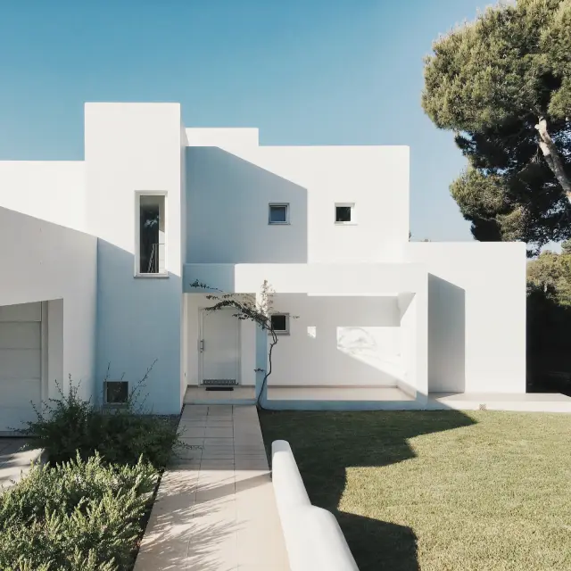
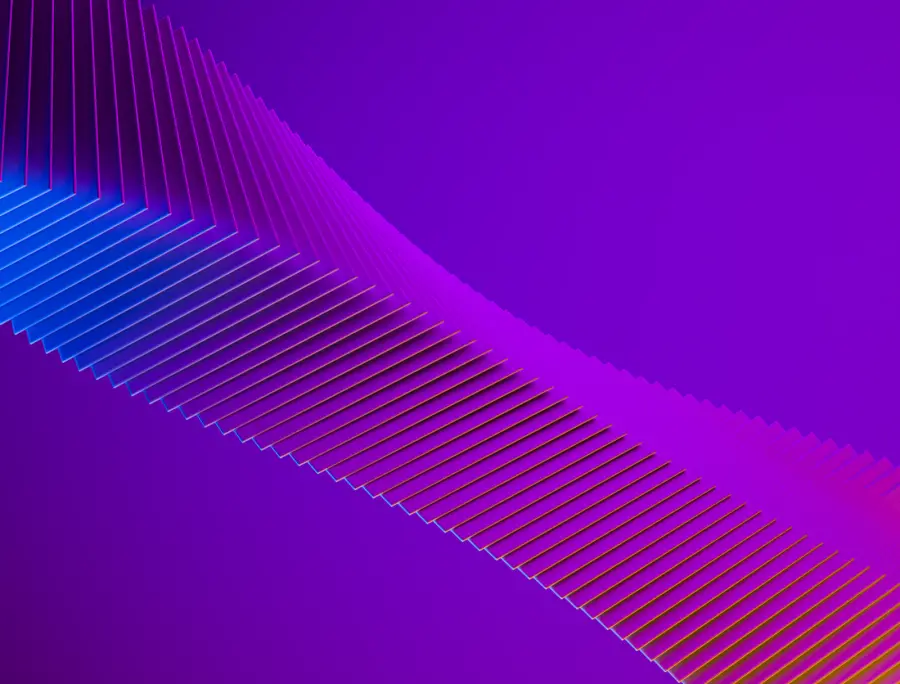

Bakery Rebuild
LCP 4.1 s → 0.9 s, orders up 18 %.
Web Developer · Portfolio
Fast, accessible, and honest about the budget — every kilobyte earns its place.

About
Fast, accessible, and honest about the budget — every kilobyte earns its place.
Everything on this page is made to be scrolled slowly. The work below is the honest list — outcomes attached, fluff removed.
Currently
Focus — Semantic HTML
Also — Modern CSS
Based — Tallinn
Selected work

LCP 4.1 s → 0.9 s, orders up 18 %.

One audit, 63 fixes, zero regressions.

A theme system three brands share.
Typo-tolerant search at the CDN edge.
A docs theme devs actually read.
A 14-step form people finish.
Services
Fast, accessible, and honest about the budget — every kilobyte earns its place. Semantic HTML is where this shows up most — ask for examples on a call.
Fast, accessible, and honest about the budget — every kilobyte earns its place. Modern CSS is where this shows up most — ask for examples on a call.
Fast, accessible, and honest about the budget — every kilobyte earns its place. Accessibility is where this shows up most — ask for examples on a call.
Fast, accessible, and honest about the budget — every kilobyte earns its place. Core Web Vitals is where this shows up most — ask for examples on a call.
Fast, accessible, and honest about the budget — every kilobyte earns its place. Edge rendering is where this shows up most — ask for examples on a call.
Fast, accessible, and honest about the budget — every kilobyte earns its place. Design systems is where this shows up most — ask for examples on a call.
Contact